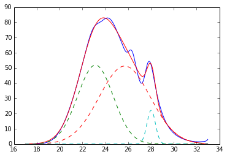

Zhenqing(ZQ) Li
Data Science, Programing, Polymer Science etc.
Welcome to my homepage
This webpage is to host some of my thoughts about data science, programming and polymer science. If you are interested, you can further go to my Blog to take a look. I also host a Chinese version of my blog as well.
About Me
My education background is in Materials Science & Engineering. MSE is a big bucket and contains subjects across many different fields. My thesis work is about polymer based biomaterials (Google Scholar). Now, I am working in a specialty chemical company developing rheology modifier. In my spare time, I like to work on programming to control the computer to do more fascinating work. These days, I fall in love with big data and would like to explore the possibility of revolutionize chemical industry using data science.
It's hard to categorize myself into one specific professions. I would call myself a hybrid engi-scientist.
Feature Projects
- Smart Underwriter
- NYC Buses This website is part of the data incubator's data visualization miniproject. It has both static and live analysis of NYC bus status. The live analysis shows the location and name of buses currently running in NYC at this time. The website is made by numpy/scipy, pandas, Flask and LeafletJS.
- GPC Fit 
{kind=link}
This model is build on Fannie Mae's data from 2000 to 2012, downloaded from Fannie Mae Single Family Housing Data. The data was processed by Python with the help of numpy/scipy, pandas and scikit-learn. You can find the source code in my Github repo.
{kind=link}
{kind=link}
GPC (Gel Permeation Chromatography) is a widely used tool for polymer scientist. It is a fast and easy way to separate molecules with different molecular weights and calculate number-average, weight-average and whatever-average molecular weights in a second. However, its separation is not as efficient as High Performance Liquid Chromatography (HPLC), where peaks are mostly separated apart. As a result, peak deconvolution is often used to give a component-like view for an overlayed peaks in GPC. There are some commercial software that can do this peak deconvolution (e.g. PeakFit). I made this open source GPC peak deconvolution software. It is powered by Python, lmfit and matplotlib. The code is very premature at this stage. GUI/Web interface will be added in the future.